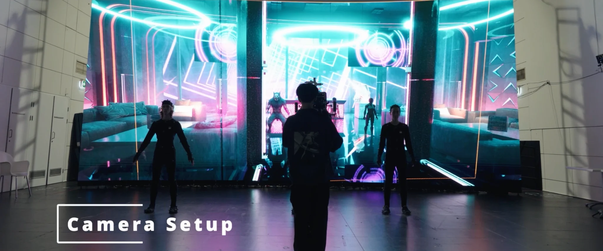

01 / Camera operation
Moving through
the scene.
I operated a virtual camera connected to the Vicon and Unreal Engine setup, using a tablet to frame and capture the action in the digital environment. This let me respond to the performers' movement while deciding how the audience would see the scene.
